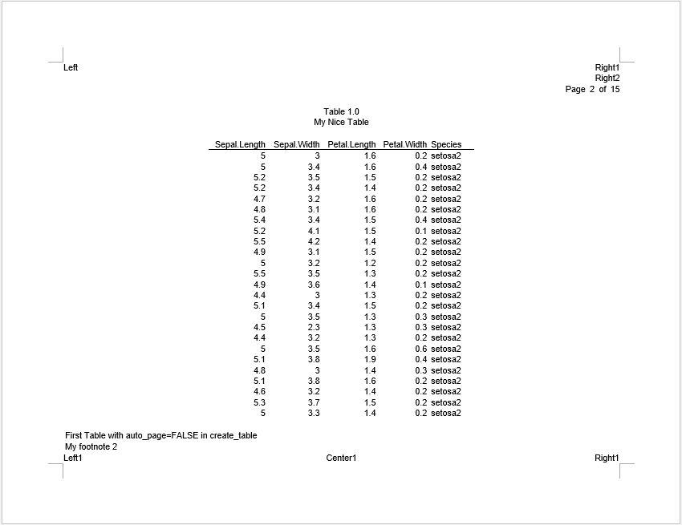
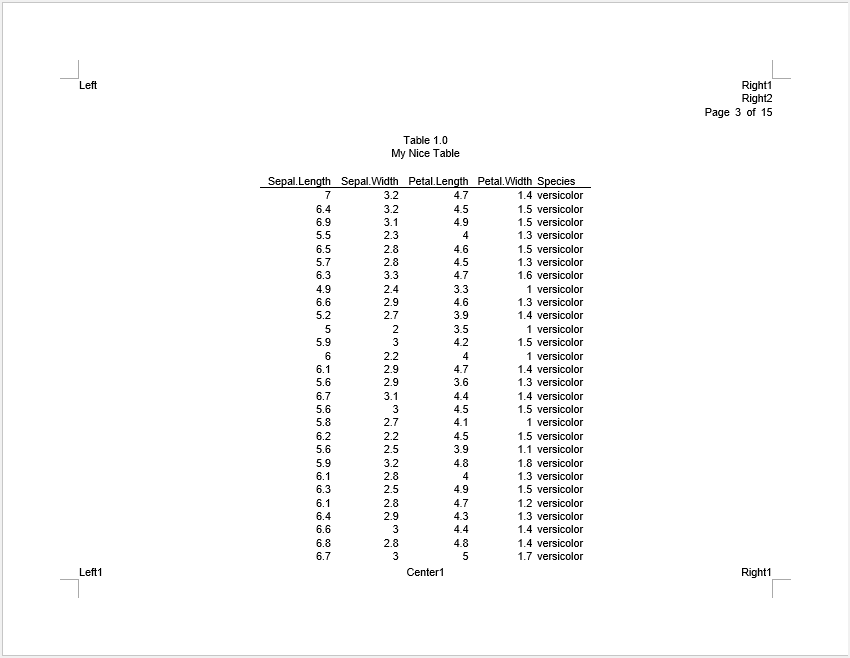
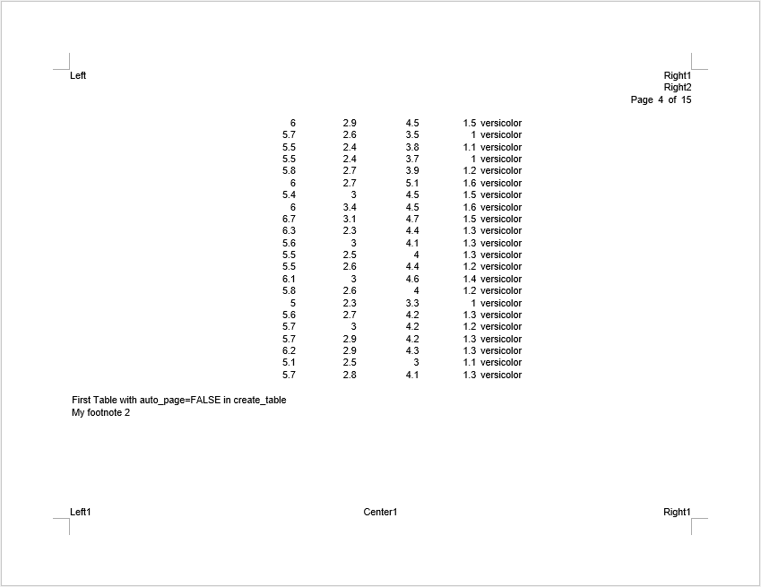
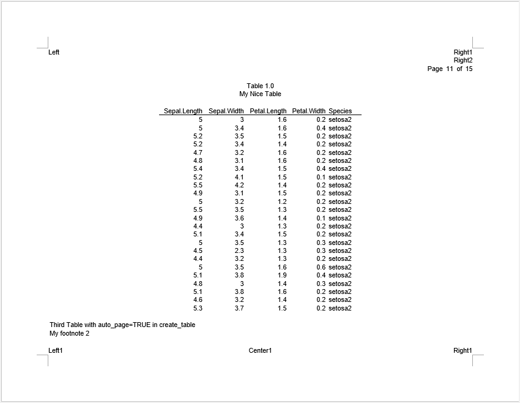
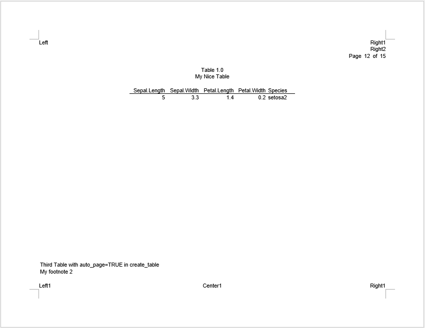
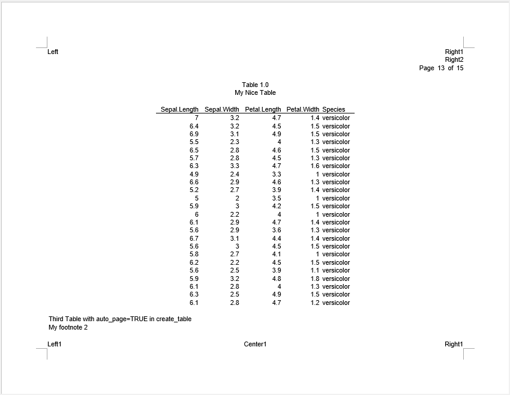
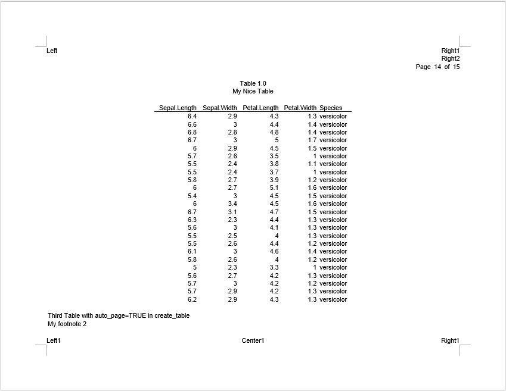
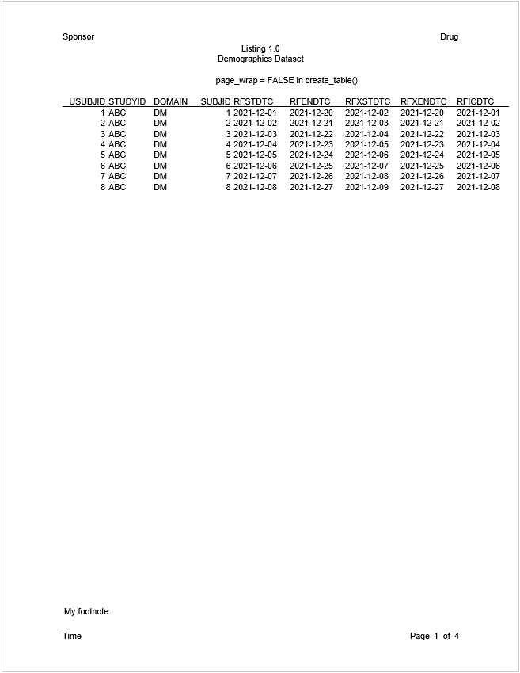
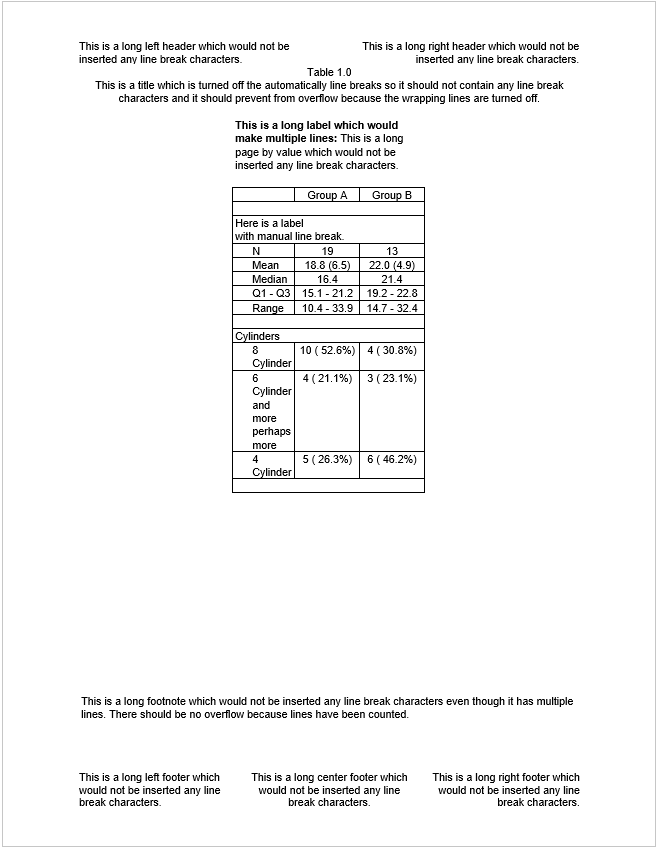

vignettes/reporter-report_options.Rmd
reporter-report_options.RmdExample 17: Code Insertion
discusses the “allow_code” parameter in report_options().
In this section, we’re going to introduce the other parameters on
report_options(). These parameters allow you to change some
of the default settings of the reporter package.
Normally, reporter will insert a page break automatically when the number of lines meets the calculated line count. The line count is based on the font size, font type, margins, and page size.
Users can also control pagination by creating a page break variable
and identifying that variable in a define function, such as:
define(page_break = TRUE). The rendering procedure will
then insert a page break every time the page variable changes.
Observe that the rendering procedure will still insert a page break automatically if the page variable rows exceed the calculated line count. That is to say, the automatic page breaking is still on, even when the user has supplied a page break variable.
There are times, however, when you may want to turn off the automatic
page breaking completely, and only break the page when indicated by the
page variable. To disable the automatic page breaking, use the
“auto_page” parameter on either the report_options or
create_table functions.
report_options(auto_page = FALSE) turns off
auto-pagination for all tables in the report.create_table(auto_page = FALSE) turns off the
auto-pagination for a particular table.Note that if the create_table and
report_options settings conflict, the
create_table value will take precedence.
Let’s look at an example:
fp <- file.path(tempdir(), "example18a.rtf")
dat <- iris[1:100, ]
dat$Species <- as.character(dat$Species)
dat$Species[1:25] <- rep("setosa1", 25)
dat$Species[26:50] <- rep("setosa2", 25)
tbl <- create_table(dat, auto_page = FALSE) %>%
footnotes("First Table with auto_page=FALSE in create_table",
"My footnote 2", valign = "bottom") %>%
define(Species, page_break = TRUE)
tbl2 <- create_table(dat) %>%
footnotes("Second Table with auto_page=FALSE in report_options",
"My footnote 2", valign = "bottom") %>%
define(Species, page_break = TRUE)
tbl3 <- create_table(dat, auto_page = TRUE) %>%
footnotes("Third Table with auto_page=TRUE in create_table",
"My footnote 2", valign = "bottom") %>%
define(Species, page_break = TRUE)
rpt <- create_report(fp, output_type = "RTF", font = "Arial",
font_size = 10, orientation = "landscape") %>%
report_options(auto_page = FALSE) %>%
set_margins(top = 1, bottom = 1) %>%
page_header("Left", c("Right1", "Right2", "Page [pg] of [tpg]"), blank_row = "below") %>%
titles("Table 1.0", "My Nice Table") %>%
add_content(tbl) %>%
add_content(tbl2) %>%
add_content(tbl3) %>%
page_footer("Left1", "Center1", "Right1")
res <- write_report(rpt)The above code creates three tables with different settings:
tbl1 turns off auto-pagination with
create_table(auto_page = FALSE).tbl2 has no setting in create_table(), so
it follows report_options(auto_page = FALSE), which also
turns off auto-pagination.tbl3 keeps auto-pagination with
create_table(auto_page = TRUE) regardless of
report_options(auto_page = FALSE).tbl1 and tbl2 have same results as shown
below:



“setosa1” and “setosa2” fill the pages exactly. “versicolor” has too many records so there is a page overflow when auto-pagination is turned off. You may remedy the page overflow by supplying an additional page break to the “Species” variable at the desired location.
tbl3 keeps auto-pagination. Let’s see the
difference:


With auto-pagination, the reporter package keeps a small buffer to prevent unexpected overflows. Therefore, “setosa1” and “setosa2” break across pages instead of fitting exactly.


As for “versicolor”, the reporter package breaks the pages automatically.
That is to say, if you have developed a paging algorithm that intends to utilize every line on the page, with no buffer, it may be best to turn off the auto-pagination. Be advised that when turning auto-pagination off, users will be responsible for any page overflows.
By default, when there are too many columns to fit on one page, the
reporter package will wrap columns across pages. Users
can turn it off with report_options(page_wrap = FALSE) or
create_table(page_wrap = FALSE). Turning the feature off
will allow you to control page wrapping more precisely.
Let’s look at an example:
fp <- file.path(tempdir(), "example18b.rtf")
# Read in prepared data
df <- read.table(header = TRUE, text = '
USUBJID STUDYID DOMAIN SUBJID RFSTDTC RFENDTC RFXSTDTC RFXENDTC RFICDTC
"001" "ABC" "DM" "01" "2021-12-01" "2021-12-20" "2021-12-02" "2021-12-20" "2021-12-01"
"002" "ABC" "DM" "02" "2021-12-02" "2021-12-21" "2021-12-03" "2021-12-21" "2021-12-02"
"003" "ABC" "DM" "03" "2021-12-03" "2021-12-22" "2021-12-04" "2021-12-22" "2021-12-03"
"004" "ABC" "DM" "04" "2021-12-04" "2021-12-23" "2021-12-05" "2021-12-23" "2021-12-04"
"005" "ABC" "DM" "05" "2021-12-05" "2021-12-24" "2021-12-06" "2021-12-24" "2021-12-05"
"006" "ABC" "DM" "06" "2021-12-06" "2021-12-25" "2021-12-07" "2021-12-25" "2021-12-06"
"007" "ABC" "DM" "07" "2021-12-07" "2021-12-26" "2021-12-08" "2021-12-26" "2021-12-07"
"008" "ABC" "DM" "08" "2021-12-08" "2021-12-27" "2021-12-09" "2021-12-27" "2021-12-08"')
# Define table
tbl <- create_table(df, page_wrap = FALSE) |>
titles("page_wrap = FALSE in create_table()")
tbl2 <- create_table(df) |>
titles("page_wrap = FALSE in report_options()")
tbl3 <- create_table(df, page_wrap = TRUE)
# Define Report
rpt <- create_report(fp, font = "Arial", font_size = 10, units = "cm",
orientation = "portrait") %>%
report_options(page_wrap = FALSE) %>%
titles("Listing 1.0",
"Demographics Dataset") %>%
add_content(tbl, align = "left") %>%
add_content(tbl2, align = "left") %>%
add_content(tbl3, align = "left") %>%
page_header("Sponsor", "Drug") %>%
page_footer(left = "Time", right = "Page [pg] of [tpg]") %>%
footnotes("My footnote")
res <- write_report(rpt, output_type = "rtf")In the above example, we created three tables with different settings:
tbl1 turns off page wrapping with
create_table(page_wrap = FALSE).tbl2 has no setting in create_table(), so
it follows report_options(page_wrap = FALSE), which also
turns off page wrapping.tbl3 keeps page wrapping on with
create_table(page_wrap = TRUE), regardless of the report
settings.For the first two tables, observe that without page wrapping the columns flow into the margins.

You may fix the column overflow by inserting a page wrap in a
define() function, or by turning on “page_wrap”.
To reduce the chance of page overflows, the reporter rendering procedure places a hard line break character at the end of every line. In this way, the number of lines on a page can be accurately counted.
There may be times, however, when you do not want these hard line
breaks. The “line_break” parameter allows you to turn them off. You can
turn off the line breaks with
report_options(line_break = FALSE). When line breaks are
off, line wrapping will be controlled by the editor instead of
reporter. reporter will nevertheless
attempt to count the number of lines as accurately as possible.
reporter will also honor any line breaks manually
inserted by the user. This feature is allowed on RTF, DOCX, and HTML
file formats.
Here is an example:
fp <- file.path(tempdir(), "example18c.rtf")
df <- read.table(header = TRUE, text = '
var label A B
"ampg" "N" "19" "13"
"ampg" "Mean" "18.8 (6.5)" "22.0 (4.9)"
"ampg" "Median" "16.4" "21.4"
"ampg" "Q1 - Q3" "15.1 - 21.2" "19.2 - 22.8"
"ampg" "Range" "10.4 - 33.9" "14.7 - 32.4"
"cyl" "8 Cylinder" "10 ( 52.6%)" "4 ( 30.8%)"
"cyl" "6 Cylinder and more perhaps more" "4 ( 21.1%)" "3 ( 23.1%)"
"cyl" "4 Cylinder" "5 ( 26.3%)" "6 ( 46.2%)"')
df$sub_title <- "This is a long page by value which would not be inserted any line break characters."
# Create table
tbl <- create_table(df, first_row_blank = TRUE, borders = c("all")) %>%
stub(c("var", "label"), width = .8) %>%
page_by(sub_title, label = "This is a long label which would make multiple lines:",
bold = "label") %>%
define(sub_title, visible = FALSE) %>%
define(var, blank_after = TRUE, label_row = TRUE,
format = c(ampg = "Here is a label\nwith manual line break.",
cyl = "Cylinders")) %>%
define(label, indent = .25) %>%
define(A, label = "Group A", align = "center") %>%
define(B, label = "Group B", align = "center")
# Create report and add content
rpt <- create_report(fp, orientation = "portrait", output_type = "RTF",
font = "Arial") %>%
report_options(line_break = FALSE) %>%
page_header(left = "This is a long left header which would not be inserted any line break characters.",
right = "This is a long right header which would not be inserted any line break characters.") %>%
titles("Table 1.0",
paste0("This is a title which is turned off the automatically line breaks",
" so it should not contain any line break characters and it should",
" prevent from overflow because the wrapping lines are turned off.")) %>%
add_content(tbl) %>%
footnotes(paste0("This is a long footnote which would not be inserted any line break characters even though it",
" has multiple lines. There should be no overflow because lines have been counted.")) %>%
page_footer(left = "This is a long left footer which would not be inserted any line break characters.",
center = "This is a long center footer which would not be inserted any line break characters.",
right = "This is a long right footer which would not be inserted any line break characters.")
res <- write_report(rpt)In the example above, observe that there are no line break characters in the produced RTF file. Also notice that there is no page overflow, even though line breaking is turned off.

If the user inserts a line break manually using \n, it
is inserted as expected.
Next: More Examples